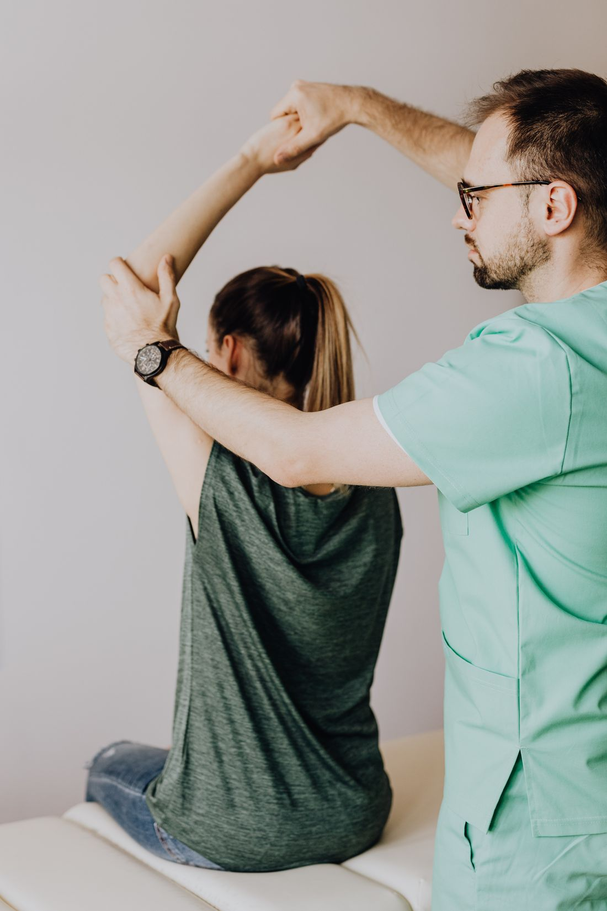

Patient Guides
Twenty guides and counting — the questions injured Michiganders actually search, answered with real Michigan-specific detail — no-fault rules, visit caps, direct access, and what to do next. New guides monthly.

IllustrativeNot sure who pays for your therapy?
Answer three questions and get your coverage lane, what to bring, and the rules that apply — in 60 seconds.
Open the Coverage CheckerCar Accidents & Michigan No-Fault
Michigan's no-fault system pays for accident rehab — these guides explain how to use it.
Physical Therapy After a Car Accident: Your First 30 Days
Get evaluated, open the PIP claim, start care — the step-by-step first month that protects your recovery and your benefits.
The Michigan No-Fault Physical Therapy Guide
Every rule that matters — visit caps, who pays, the one-year-back rule, and your rights — explained in plain English.
Whiplash Symptoms: Timeline, Red Flags & How Long It Lasts
The full symptom list, why they show up days later, the week-by-week timeline, the grades, red flags, and what actually helps — with Michigan no-fault notes.
Does Physical Therapy Affect Your Car Accident Claim?
How treatment, gaps, and documentation interact with a Michigan no-fault claim — without the mythology.
Work Injuries & Return to Work
Workers' comp rights and the evaluation that decides what's safe.
Workers' Comp Physical Therapy in Michigan: Your Rights
Who pays, who picks the clinic, the 28-day rule, and how to keep your claim and your recovery on track.
Returning to Work After an Injury: How an FCE Decides What's Safe
The functional capacity evaluation explained — what it measures, who orders one, and how to walk in prepared.
Work Injuries in Michigan: What the 2024 Numbers Show
The latest BLS state data — 76,700 recordable cases, which industries carry the risk, and what it means for return-to-work.
Costs, Insurance & Choosing Care
What therapy costs, what your plan allows, and how to pick well.
What Physical Therapy Actually Costs in Michigan (2027)
With insurance, without it, after a car accident, on Medicare — real numbers and the questions that prevent surprise bills.
Your Therapy Benefits Reset January 1 — Use Them Right
Most commercial plans cap therapy visits per calendar year. Here's how the reset works and how to plan care around it.
Do You Need a Referral for Physical Therapy in Michigan?
Usually not — Michigan direct access explained: the 10-visit/21-day rule, the insurance catch, and what starting early changes.
How to Choose a Physical Therapy Clinic in Sterling Heights (a Checklist)
Eight questions that separate measurement-driven care from a stretching subscription — whoever you choose.
Physiotherapy vs. Physical Therapy: Is There a Difference?
Same profession, two names — plus how a PT differs from a chiropractor, massage therapist, and OT, and how to check a Michigan license.
Conditions & Recovery Decisions
The decisions patients actually face, explained with evidence.
De Quervain's ("Mommy Thumb"): What Helps
The thumb-side wrist pain that flares when you lift a baby, grip, or wring a cloth — the splinting and technique changes that help, and how it differs from thumb arthritis.
Base-of-Thumb Arthritis: Relief & What Helps
The base-of-thumb pain that bites when you open a jar or turn a key — the brace and joint-protection habits that help, and the strengthening that keeps the hand usable.
Groin Strain: Recovery & Exercises
The inner-thigh pull felt when you cut, kick, or squeeze your legs together — the grades, a realistic timeline, and when groin pain is something other than a strain.
IT Band Syndrome: Outer-Knee Pain in Runners
The sharp outer-knee pain that shows up a set distance into every run — why rolling and stretching the band miss, and the hip strengthening that works.
Achilles Tendinopathy: Why Loading Beats Rest
The heel-and-calf stiffness that's worst with your first morning steps — why loading beats rest, the strengthening that works, and how to tell it from a rupture.
Hamstring Strain: Recovery & Avoiding Re-Injury
The sharp pain behind the thigh that sidelines sprinters — the grades, a realistic timeline, and the eccentric strengthening that prevents re-tears.
Neck Pain Relief: Stretches & When to Worry
Why most neck pain is muscular and settles — the gentle stretches and movement that help, how long a stiff neck lasts, and the red flags worth acting on.
Hip Flexor Strain: Recovery & Exercises
The sharp pull at the front of the hip when you sprint or lift your knee — the grades, a realistic timeline, and the strengthening that speeds recovery.
Calf Strain: Treatment & Getting Back
The sudden calf pain that feels like a kick — how to treat it, the loading that prevents a re-tear, and how to tell a strain from a blood clot.
Spinal Stenosis: Exercises That Keep You Walking
The leg pain that comes on when you walk and eases when you sit — what lumbar stenosis is, the forward-leaning exercises that help, and when surgery is considered.
Piriformis Syndrome: Deep Buttock Pain
The deep buttock pain that bites when you sit or climb stairs — how to tell it from sciatica, why it's an over-used label, and the hip work that helps.
Frozen Shoulder: Stages & What Helps
The shoulder that slowly stiffens until you can't reach behind your back — the three stages, who gets it, and the stage-appropriate exercises that work.
Degenerative Disc Disease: What It Really Means
The scary-sounding diagnosis, explained honestly — why it's mostly normal aging, why a frightening scan doesn't mean a fragile spine, and why staying active beats rest.
Hip Bursitis: Why the Side of Your Hip Hurts
The outer-hip pain that ruins sleep on that side — what it really is (more tendon than bursa), the strengthening that fixes it, and what to avoid.
Golfer's Elbow: Inner-Elbow Pain & Exercises
The inner-elbow pain that flares when you grip — how to tell it from tennis elbow, the strengthening that works, and how long it takes.
Tennis Elbow: Causes, Exercises & What Helps
The outer-elbow pain that flares when you grip — who really gets it, the strengthening that works, and what to avoid.
Jumper's Knee (Patellar Tendinopathy)
Pain at the bottom of the kneecap — how it differs from Osgood-Schlatter, the loading that works, and whether you can keep playing.
Sever's Disease: Heel Pain in Active Kids
The heel-pain limp in growing kids — whether it's safe to keep playing, what helps, and how long it lasts.
Carpal Tunnel: Symptoms, Relief & What Helps
The numb night-time hand explained — the splinting and exercises that help, ergonomic fixes, and the signs not to ignore.
Sprained Ankle: Recovery & Preventing the Next One
The grades, a realistic timeline, why moving it beats resting it, and the balance training that stops the re-sprain cycle.
Plantar Fasciitis: Why Your Heel Hurts & What Helps
First-step heel pain explained — the stretches and strengthening that work, footwear, and when shockwave therapy fits.
Shin Splints: Causes, Treatment & Getting Back to Running
What causes them, how to tell them from a stress fracture, and how to heal without a relapse.
How Long Does Sciatica Last? (And How to Sleep With It)
A realistic recovery timeline, the sleep positions that help, what makes it drag on, and when to get seen.
SI Joint Pain: Symptoms, Causes & What Helps
One of the most missed causes of low-back pain — what it feels like, how it differs from sciatica, how to sleep with it, and the care that works.
Herniated Disc vs. Sciatica: What's the Difference?
One is a structure, the other a symptom — why the distinction changes your treatment, and when each gets better.
Physical Therapy for Sciatica: What Actually Helps
The movement, nerve work, and walking that ease sciatica — what helps, what to avoid, and when leg pain means it's time to be seen.
Osgood-Schlatter: A Parent's Guide to the Growing Knee
The painful bump below an active child's kneecap — what it is, whether it's safe to keep playing sports, and what helps.
Rotator Cuff Pain: Exercises & What Helps
What causes it, why it hurts at night, the exercises that help and the ones to avoid, and when it needs more than home care.
Rotator Cuff Tear: Surgery or Physical Therapy First?
Most degenerative tears do as well with structured rehab as with surgery — here's how the decision actually gets made.
Knee Arthritis: Exercises That Actually Help
Why movement helps rather than harms the joint, the exercises and habits that work, and when to consider other options.
Hip Replacement Recovery: A Week-by-Week Timeline
From the day of surgery to a full year out — milestones, what PT does at each stage, precautions, and warning signs.
Knee Replacement Recovery: A Week-by-Week Timeline
From day one to month six — what's normal, what's ahead of schedule, and the two numbers that predict your outcome.
Physical Therapy After a Knee Replacement: What to Expect
What the rehab actually involves, how soon it starts, how long it lasts — and why the therapy, not the surgery, decides your result.
Vertigo That Spins When You Roll Over? It's Probably BPPV
The most common vertigo has a mechanical cause and a mechanical fix — often in one to three visits.
Desk Worker Neck Pain: Five Fixes That Beat a New Chair
The evidence on posture is messier than the ads — what actually reduces tech-neck pain, from a clinic that measures it.
Fall Prevention for Macomb County Seniors: What Actually Works
Falls aren't bad luck — they're measurable, trainable risk. The evidence-backed program, and what Medicare covers.
Falls Among Older Adults in Michigan: What the Numbers Show
1 in 4 older Michiganders fell last year, and fall deaths are up 21% since 2018 — the CDC figures, and what lowers the risk.
Dry Needling vs. Acupuncture: What's the Difference?
Same thin needle, different reasoning — how they differ, what the evidence shows, and when a PT uses dry needling.
Does Nonsurgical Spinal Decompression Work?
An honest, evidence-based look — what it can and can't do, the Medicare reality, and what tends to help more.
Your Visits at Proof
What a first visit involves and what measured progress looks like.
Your First Visit: the Checklist
What to bring, what to wear, what happens minute by minute — and a sample progress report so you know what you'll walk out with.
What a Progress Report Actually Shows
A complete worked example — fictional data, real format — and the four things that separate measured care from guesswork.